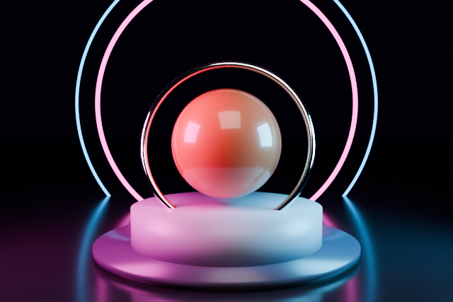
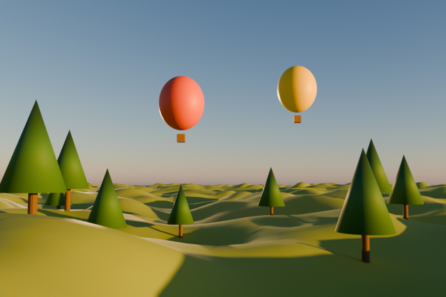
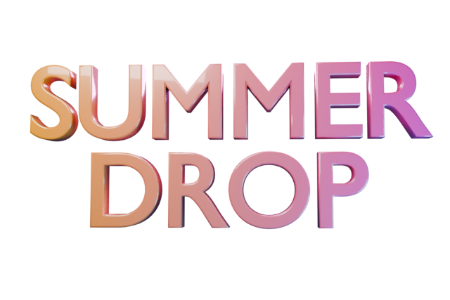
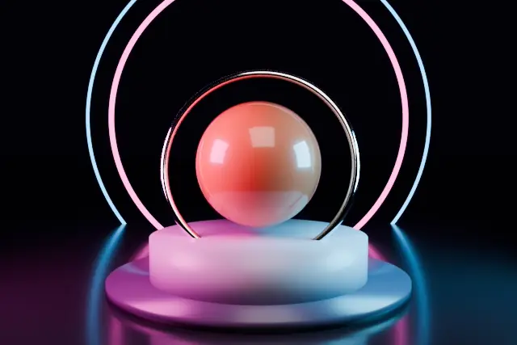
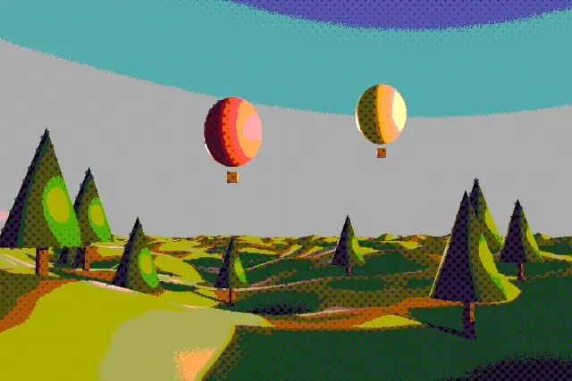
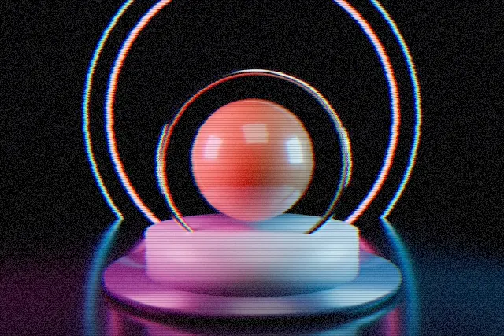
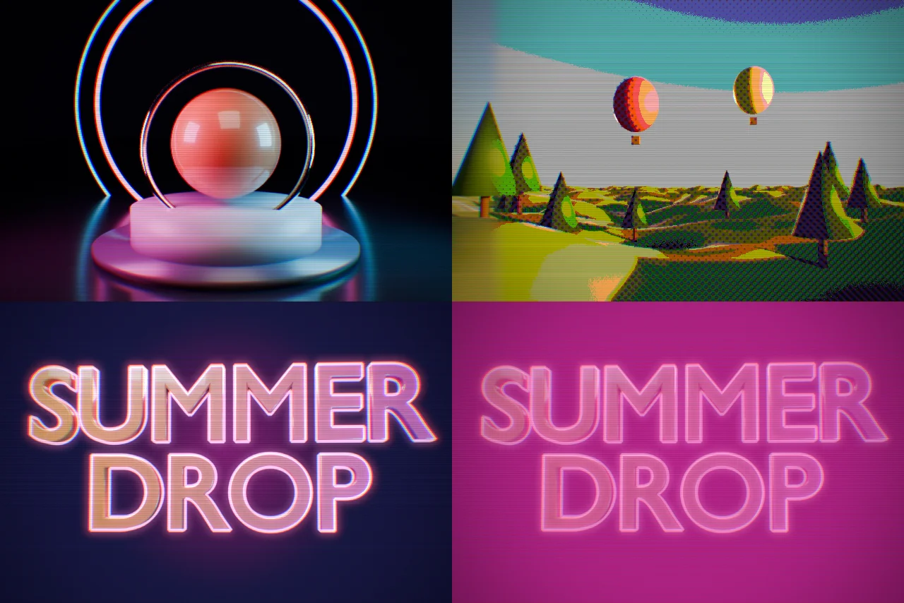

Products › BaseNode Packs › Motion Compositing › Tutorial: The promo cut
The promo cut
Three stills, rendered once: a product on a podium, golden hills, a title. Four seconds later they are a promo that loops: pushed, printed, wiped, glitched, lit in neon. All of it happens in the compositor, on the timeline. No 3D scene is rendered again, and every cut is a line of text you can retime.

You will learn
- The craft. How a motion designer cuts: transitions that cover exactly their share of the frame, timed in frames and eased, chained one into the next, and the looks (print, tape, glitch, neon, lens) laid over the cut, not under it.
- The .bn. A transition is a call that takes two images and gives one: the cut so far goes in as the
aof the next, so a whole edit reads top to bottom, a line per cut.
Prerequisites
If .bn is new to you, start with Lunar ground: it shows the language one line at a time.
If the compositor is, The final shot finishes a render there step by step; this page goes faster on the basics it explains, pipes and keymix among them.
Before you start
You need Blender 5, the Base Node add-on, version 0.13.1 or later, and the Motion Compositing pack. The pack is sold by the author of Base Node, apart from the open source project. The steps are free to read and to copy; the two modules they call are not.
| Module | Comes with | What it gives |
|---|---|---|
transitions | Motion Compositing | Linear, radial, clock and iris wipes, a wipe by a gradient map, cross dissolve, dissolve by noise, dip to a colour, push; frame_progress to drive them by the frame. |
stylize | Motion Compositing | Posterize, halftone and colour halftone, scanlines, video tape, glitch blocks, neon outline, vignette, chromatic aberration. |
merge, grade, mask2d | the add-on, free | Nuke's Merge operations, exposure, and 2D masks. |
The cut is made of three plates. Download them, or render your own at the same size:


promo-cut-plate-a.png, the podium.

promo-cut-plate-b.png, the hills.

promo-cut-plate-c.png, the title, with its alpha.
In Blender, open the three in an Image Editor (Image › Open): the graphs read them by their names, Image[image: "promo-cut-plate-a.png"](). A name Blender does not have stops the step with an error that says so.
For your own shots, change those names. Set the scene's resolution to 640 × 427, its frame range from 1 to the length of the step, and in Color Management its View Transform to Standard: the plates are pictures already viewed, and the default AgX would view them a second time.
Every block below is a complete .bn file, its code beside the nodes it builds. Two ways to try a step:
- Drag it. Drag the file icon of its block, or its title, onto Blender and keep Import into the .blend:
promo_cutbecomes the scene's compositor, if the scene has none yet. A click on the file icon downloads the file instead. - Paste it. Press the copy button of its block, open the Compositor, press Ctrl+Shift+V.
Render the animation with Ctrl+F12, or scrub the timeline with the compositor's backdrop on. The animations are made from these exact files by render.py:
it renders the three plates once, then the compositor of each step frame by frame, in a scene with nothing to render.
A transition is a share of the frame
Every transition of transitions goes from an image a, shown alone at a progress of 0, to an image b, shown alone at 1. Between the two, a wipe gives each pixel a rank, the share of the frame that b covers before it reaches that pixel, and shows b where the rank is below the progress.
So at a progress of 0.3, b covers 30 % of the frame, whatever the shape: a straight edge at any angle, a clock hand, a circle that opens. Ease the progress and the motion eases; the coverage never jumps at a corner of the frame, as it does when a wipe is a plain distance or angle.
Each one gives two outputs: .image, the cut, and .mask, 1 where b shows, to put an effect on the edge or on one side only.
1. A linear wipe
The hills wipe the podium away. wipe_at takes the progress as its input; promo_cut, the scene's compositor, calls it at 0.5.
step1_wipe.bn: promo_cut, wipe_at
- The angle is the way
bcomes in: 0 from the left, 90° from the bottom. 0.5236 radians is 30°: the edge leans, which reads as motion even in a still. - The softness is the width of the edge, in rank: 0.04 is a 4 % band of the frame, enough to hide the pixels of the edge, not enough to read as a dissolve. The band slides so that 0 still shows the podium alone and 1 the hills alone.
- Why a separate graph. The scene's compositor gets its render and nothing else: an input of
promo_cutwould stay at 0.wipe_athas the input, so you can see it in the node editor and keyframe it on its group node (I over the field).

2. On the timeline
Keyframes work, and they live outside the text. frame_progress puts the timing in the graph instead: 0 until the frame start, 1 from length frames later, and between, a smoothstep when ease is on.
step2_frame.bn: promo_cut
- The numbers are frames. At 24 frames a second, the wipe starts at half a second and lasts one. Retime it by changing two numbers, and read the timing back in the text.
- The ease starts the edge slowly, speeds it up, and slows it down before it stops: a cut that lands. A linear wipe,
ease: false, starts and stops dead, which reads as mechanical.
3. Clock, iris and radial wipes
A promo is more than one cut. Here the three plates follow each other, one every 24 frames, and the last cut comes back to the first plate, so the animation loops.
step3_wipes.bn: promo_cut, title_card
- The chain. Each transition takes the cut so far as its
a:abgoes into the iris,bcinto the radial wipe. Before its start frame a transition shows itsaalone, so the later cuts wait their turn; after its end it shows itsb, so the earlier ones are done. The edit reads top to bottom, a line per cut. - The clock wipe sweeps clockwise from twelve. The iris opens a circle from the centre, on the title: the eye is already there. The radial wipe with
direction: Bothsweeps both ways at once from the top. - The title card. The title plate has an alpha;
overlays it on a backdrop of two colours mixed by a softcircle_mask, magenta at the heart, a deep blue at the edges. It is a graph of its own, called like a node.
4. Dissolves
The same chain, three other transitions. A dissolve does not draw an edge: it mixes, everywhere at once, or in a scattered order.
step4_dissolves.bn: promo_cut
noise_dissolvelets the hills in by cells of 12 pixels, each at its own time: their ranks are a white noise, even from 0 to 1, so the share of cells that has turned is the progress.seedpicks another order,animated: trueanother one each frame, a shimmer.dip_to_colorfades the hills to orange in the first half and the orange to the title in the second: a dip to black by default, a flash of the brand's colour here. It is not eased: the colour should hit, not glide.dissolve, the cross dissolve, mixes the two images by the progress, on the four channels.
5. Push
A push moves both images: b slides in and shoves a out of the frame. It is the cut of social media promos, quick and physical.
step5_push.bn: promo_cut
- The direction is the way
aleaves, by a whole width or height of the frame:Left,Right,UporDown.Lefthere, the hills coming from the right;Up, the title coming from below. - Twelve frames, half a second, eased: a push longer than that floats. The ease matters most here, since the whole frame moves: it is what gives the push its weight.
6. Print: posterize and halftone
Now the looks. The first one turns the hills into a printed comic, and a wipe develops them back into the render: the transition goes from one look of a plate to another, not from a plate to the next.
step6_print.bn: promo_cut, comic
- As the eye sees it. The compositor works on linear light, where most of a picture sits low: cut in four even levels there, the hills would be black.
gradewith agammaof 2.2 lifts the image to about what a screen shows,seen; the levels are cut there, and a gamma of 1 / 2.2 brings the result back. posterizecuts each channel into 4 even levels: flat areas of colour, as an offset print with few inks.halftonedraws a dot of ink in each cell of 7 pixels, its share of the cell 1 − the luma there: big dots in the dark, none in the light. Its.maskis the dots alone;keymixlays the ink through them, at 85 %, on the flat colours. The dots are measured onseenone stop brighter,exposure_stops(seen, stops: 1.0), so they stay in the shadows and the sky stays clean, as in a comic.

Try: color_halftone(image, cell: 6.0) in place of comic(b): three screens of red, green and blue dots, turned so that they do not beat.
7. Tape and glitch
A hard cut needs something to hide it. Here a push of 8 frames, on a video tape, torn by glitch blocks for a quarter of a second around it.
step7_tape.bn: promo_cut, burst
vhsmoves each row sideways by up tojitterpixels, shifts red and blue apart byshift, and adds a noise of luminance. It is left still here: a fixed jitter reads as a worn tape under the rolling lines.animated: truemakes it boil every frame, stronger, and best kept for a short beat.scanlinesdarkens one row in three, androllmoves them up a quarter of a pixel a frame: 12 pixels over the 48 frames, four rows, so the loop closes.glitch_blockscuts the frame into blocks of 64 × 10 pixels and shoves aboutamountof them sideways, their red and blue split.burstdrives that amount: 1 at frame 25, the middle of the push, down to 0 six frames before and after. Which blocks, and how far, is a noise of the seed and the frame: the same every render.

8. The reel
Everything together, 96 frames that loop: a push into the printed hills, which develop; an iris onto the title, whose neon comes on; a dip through magenta back to the podium. The glitch marks the first two cuts, and a lens holds the frame together.
step8_reel.bn: promo_cut, title_card, comic, burst
neon_outlinedraws a tube of light along the edge of a matte, 2 pixels to each side, whitened at its core, with its glow, and adds it to the image. The matte is the alpha of the title plate,alpha_of(title): the letters, exactly.ondrives its intensity: on in 3 frames at frame 57, off at 62 and 63, on again, the flicker of a tube that starts.- The order. The neon is on the title card, before the cut: the iris opens onto a lit sign. The glitch, the scanlines and the lens come after the whole cut, on every plate: they are the screen and the camera, not the shots.
chromatic_aberrationmagnifies red and shrinks blue about the centre, 3 pixels at the corners, 15 at the glitches: the lens breaks with the picture.vignettedarkens the edges by 60 %, from a radius of 0.55: the eye stays in the middle, where the title is.

The knobs
The cut is in the frame numbers; the look is in a few inputs. The ones that change the promo most:
| Where | Input | What it does |
|---|---|---|
frame_progress | start, length, ease | When a transition starts, how many frames it lasts, and whether it eases in and out. |
| wipes | angle, start, direction, closing, softness | Where the edge comes from and which way it turns, an iris that opens or closes, how soft the edge is. |
noise_dissolve | size, seed, animated | The size of the cells, their order, and whether it changes every frame. |
push | direction | Which way the frame leaves: Left, Right, Up or Down. |
posterize, halftone | levels, cell, ink | How few colours, how big the dots, which ink. |
glitch_blocks | block, amount, shift, split | The size of the blocks, how many move, how far, how far their red and blue split. |
neon_outline | color, width, glow, intensity | The colour of the tube, its thickness, the size of its halo, its strength. |
vignette, chromatic_aberration | amount, radius | How dark the edges and from where, how far the colours part at the corners. |
To cut your own promo, change the names of the plates and the frames of the cuts. Keep the last cut ending on the first plate, and the frame range a multiple of the scanlines' roll, and it loops.
Take it to Blender
The finished reel, in one file. Open the three plates first, then drag the card onto Blender and keep Import into the .blend: promo_cut becomes the scene's compositor, if it has none yet. Set the frame range from 1 to 96. A click on the card downloads the file.
The steps before it, to start again from any of them:
The files, with the script that renders this page's plates and animations, are in examples/tutorials/promo_cut/.